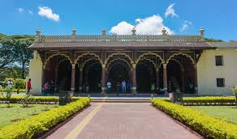

East Bangalore is a part of the Bengaluru Urban District in Karnataka state. It has a population of 2101822. The area covered is about 286.56 square kilometres. The coordinates of East Bangalore are 13.0014° N and 77.6182° E. The climate of East Bangalore is wet and warm during summers and monsoon. During the dry season, it is moderate and partly cloudy. The temperature varies from 61°F to 93°F. The official language is Kanada, however, English and Hindi are spoken by many here. Infrastructure and Details The nearby cities to Bangalore East are Hulimangala Hosakote (38.6 km), Bangalore (5 km), Neelakanta Agrahara (45.9 km) and Veerapura (36.9 km). The Bruhat Bengaluru Mahanagara Palike (BBMP) is the Local Urban Body that is responsible for maintaining the civic amenities and other infrastructures here. Bangalore East Railway station is 4.87 km. and the nearest Airport is Kempegowda International Airport at a distance of 34 km The renowned Malls in the vicinity are Phoenix Market City Mall, VR Bengaluru Mall and Inorbit Mall. The Schools in the vicinity are Brilliant National School, Brilliant National School, Hill Top Mar Thoma School and Marthas English School. The renowned hospitals in East Bangalore are Shreyas Maternity Home, Specialist Hospital and Ashwin Hospital. Some very renowned MNCs and other offices are in this location.
|  | |
|
|